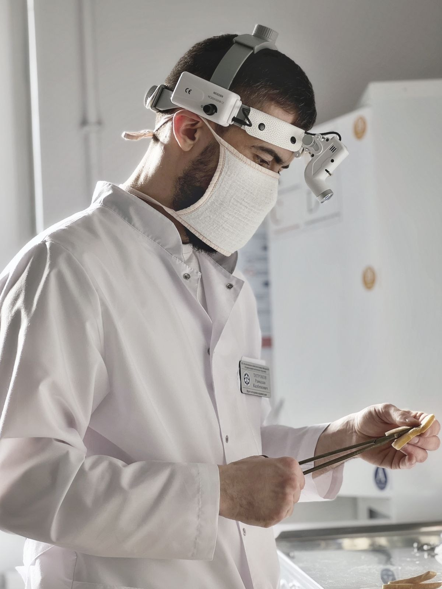
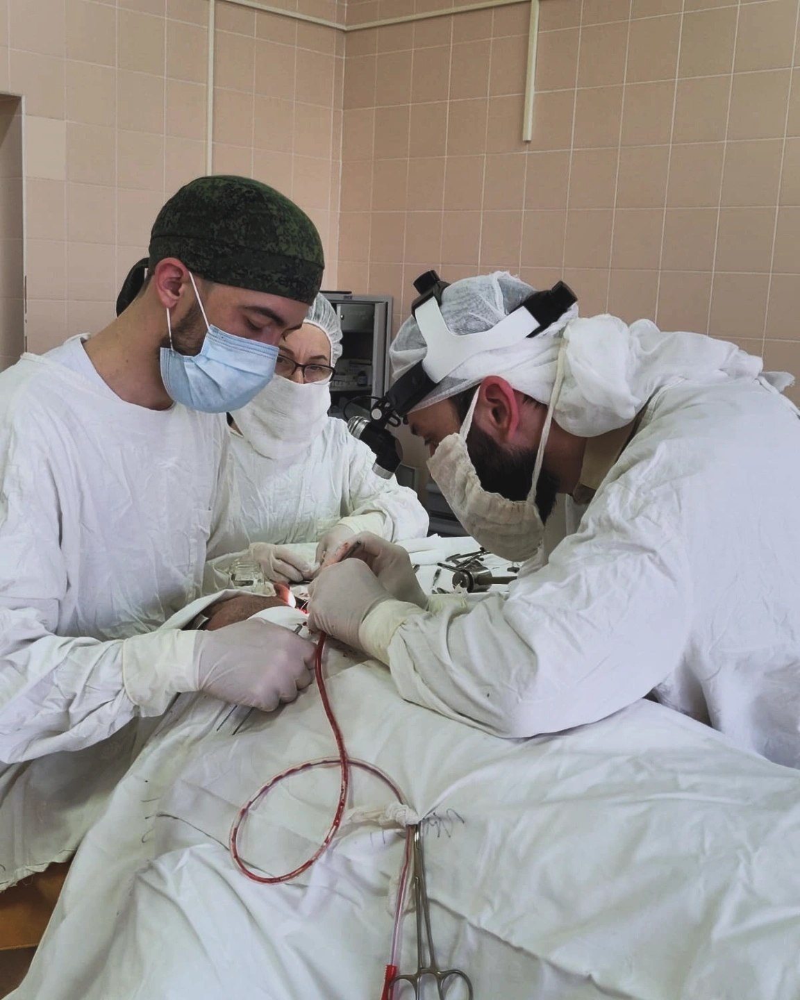

Я — врач-оториноларинголог. Занимаюсь диагностикой и лечением заболеваний уха, горла и носа у взрослых: от насморка и отита до хронических синуситов, храпа, нарушений слуха и голоса.
ЛОР — это слух, дыхание и голос. Это качество жизни.
Для меня ЛОР — это не «просто уши и горло». Это слух, равновесие, дыхание и голос — то, что напрямую влияет на качество жизни человека каждый день.
“
Лечу не болезнь, а человека.
Рамазан Казбекович Татроков

Внимание к деталям на каждом этапе осмотра
КАК Я РАБОТАЮ С ПАЦИЕНТАМИ
01
Сначала разобраться
Я не назначаю лечение «на глаз». Сначала — подробный расспрос и осмотр: отоскопия, эндоскопия, а при необходимости — аудиометрия и другие исследования. Только затем обсуждаем план. Если можно обойтись без антибиотиков или операции, рассмотрим этот вариант.
02
Объяснить понятным языком
Пациент имеет право понимать, что с ним происходит и почему я предлагаю то или иное лечение. Стараюсь объяснять без пугающих терминов и показываю, что видно на снимках и при эндоскопии.
03
Увидеть человека за диагнозом
За одним и тем же диагнозом могут стоять разные причины и разные решения. Учитываю возраст, образ жизни, сопутствующие заболевания, страхи и ожидания пациента.
04
Сохранять спокойствие и честность
«Само пройдёт» — не всегда правда. Но и операция нужна далеко не в каждом случае. Я за честную оценку и спокойный, взвешенный подход.
ОБРАЗОВАНИЕ
Ростовский государственный медицинский университет — лечебное дело, 2019. Дагестанский государственный медицинский университет — ординатура по оториноларингологии, 2021.
Диагностика, понятное объяснение и обсуждение вариантов лечения — основа моей работы.
Видеоэндоскопия
Использую видеоэндоскопию ЛОР-органов, когда она помогает уточнить причину жалоб. Изображение на мониторе можно обсудить вместе с пациентом.
Обоснованное лечение
Стараюсь следовать клиническим рекомендациям, не назначать лишние анализы и препараты без доказанной пользы. Осмотр и процедуры стремлюсь сделать максимально комфортными.
Амбулаторная хирургия
Выполняю малые вмешательства по показаниям, в том числе при отдельных доброкачественных образованиях и абсцессах. Возможность радиоволнового или лазерного метода и восстановление обсуждаем индивидуально.
Опыт экстренной помощи
Работал с неотложными ЛОР-ситуациями, включая травмы, кровотечения и нарушения дыхания. При экстренных симптомах нужна неотложная помощь, а не ожидание плановой записи.
В кабинетеРабота с коллегами

Командная работа в операционной
ЧТО СЧИТАЮ ВАЖНЫМ
Ранняя диагностика
Лучше разобраться с затяжными или тревожными симптомами вовремя и обсудить риски осложнений на осмотре.
Профилактика и гигиена
Уход за ушами, защита слуха от шума и другие привычки помогают беречь здоровье ЛОР-органов.
Наблюдение
При хронических состояниях важны повторная оценка и понятный план: когда прийти снова и на что обращать внимание.
Обучение пациента
Когда человек понимает, как устроены его нос или ухо, ему легче следовать рекомендациям. Поэтому я делаю познавательный контент.
ОТЗЫВЫ ПАЦИЕНТОВ
Каким запоминается приём
Внимание, спокойствие и понятные объяснения — в словах пациентов.
Текст о враче и фотографии предоставлены самим специалистом. Страницы заболеваний подготовлены как справочные материалы на основе открытых источников NHS и ENT Health. Диагноз и лечение определяются индивидуально после осмотра.